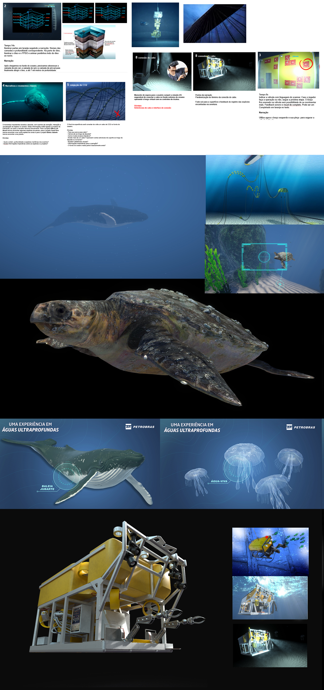
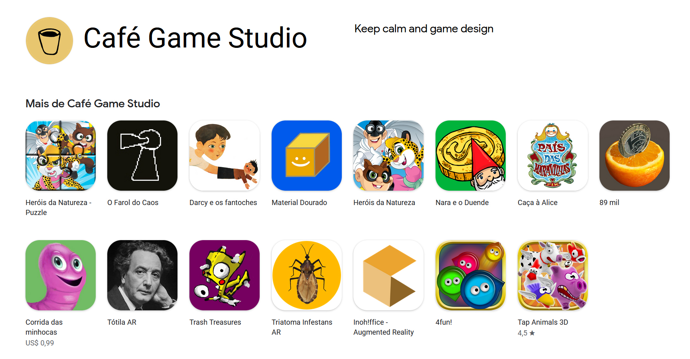

M.Sc. in Visual Arts with specification in product design, digital art and new media
development. 12+ years of
experience directing and developing several projects as apps, games, animations, 3D, AR, VR,
photogrammetry and tech
art. I´m proficient in several softwares such as Maya, Photoshop and Unity, besides other
digital media skills such as
sound/video editing and C#. My most recent roles were as product/experience designer and art
director for apps, VR and
AR. I´m also a professor with more than 8 years teaching in courses like game design, game
art and new media.
Petrobras | Venturion
Experience design, art direction and tech art
This virtual experience was conceived for RIO2C by Petrobras, the largest oil company in
Brazil. In this VR the user operate an
interactive ROV (Remotely Operated Vehicle) to complete an informastive mission in
ultra-deep
waters.
This project had several features like haptics, scanning species system, mailing gift cards
and an air cooling rig to be 4D immersive.
I had a small team to manage so I had many roles on this project as art director,
storyboarding with the client,
digital 2D and 3D art, FX and managing outsource art assets.
Sotwares used: Photoshop, Maya, Unity, Premiere, Github and G.Suit

Wildfire Explorer VR
Virtual Planet Technologies LLC
VR for global warming education and fire prevention training in
California. My main roles included experience design, storyboaring, 3D modeling,
particles and general FX. We used public data to create some
interesting things and animations. More info here.
Sotwares used: Photoshop, Maya, Unity, Github and G.Suit
Mixed Reality Experience
Volkswagen | RIO
Experience using Microfone's HoloLens to demonstrate how a new complex service, created by
the client, works. My role was design experience, storyboarding and 3D modeling. More info
here.
Sotwares used: Maya, Photoshopt, Unity and G.Suit
Vikings: Beyond the Legend
Virtual Grounds Interactive
Augmented Reality project that works mixing 3D
with the original model of a viking ship vessel, simulating the crew and the ship´s movement
in
real-time using a tablet. The project was exhibited in some science museums in
United States, such as The Franklin Institute, Philadelphia. My main role was
technical 3D artist.
Sotwares used: Maya, Photoshopt, Unity
Paw Patrol
Client: Nickelodeon | Messier Games
3D models and animations for a game using Microsot Kinect to control Paw Patrol
characters with only
gestures. The project was created for shopping malls in São Paulo - Brazil and had a
huge sucess.
Sotwares used: Maya, Photoshopt, Unity
Augmented Reality
Commercial projects
I produced and developed several AR projects. Some examples included clients as LACTA,
Inoh!ffice, an awarded project in the European
competition IF
DESIGN,
Darcy
and his Puppets, project selected at public service announcement contest, amoung
other projects and AR solutions.
In all
of these
projects I
created the main general concept of the product, product design, 3D art, some code and
team
management.
Mobile games
Café Gamestudio
As founder of Café Gamestudio, I direct, developed and published several mobile games.
Check
out Café Gamestudio mobile games at our Google Play page here.

3D models
Senior
I use 3D moddeling in diverse ways, contexts and workflows having more than 10 years of
experience creating
meshes, UV mapping, textures, materials, 3D data clean, optimization and 3D printing.
You can check out
some of my models at Sketchfab.
New Media Art exhibitions
Some of these artworks were selected to be displayed in public spaces like R.E.A.L. an
interactive installation at FILE - Electronic Language
International Festival - São Paulo.
The flora of a real time virtual forest-garden, full of recognizable, affective and alien
plants disappears over
time, as it perceives the proximity of some human presence. If the detection process is
prolonged, at the end of the
process, there is only the silence of the Cartesian plane that forms the infertile soil,
reinforcing the artificiality
of the simulacrum. If no human presence is detected, the flora gradually recomposes
itself.
3D Dataviz
Visual data experiment performed using data obtained from Our
World in Data
about COVID-19 pandemic in Brazil. More info here.